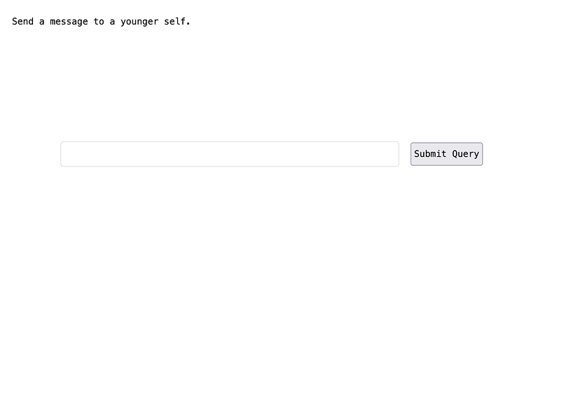
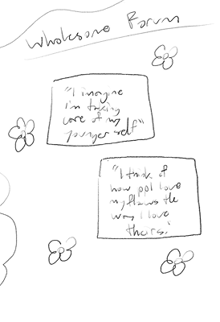
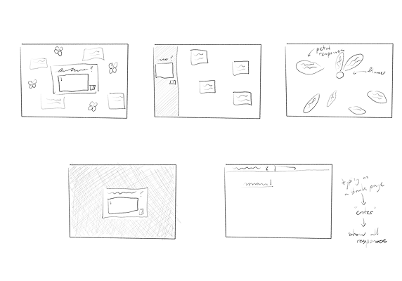
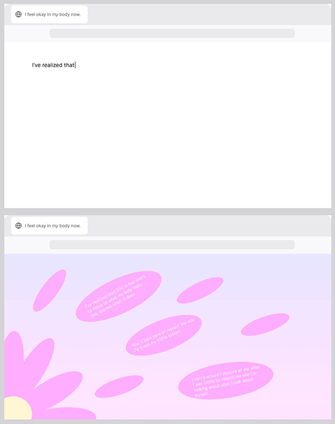
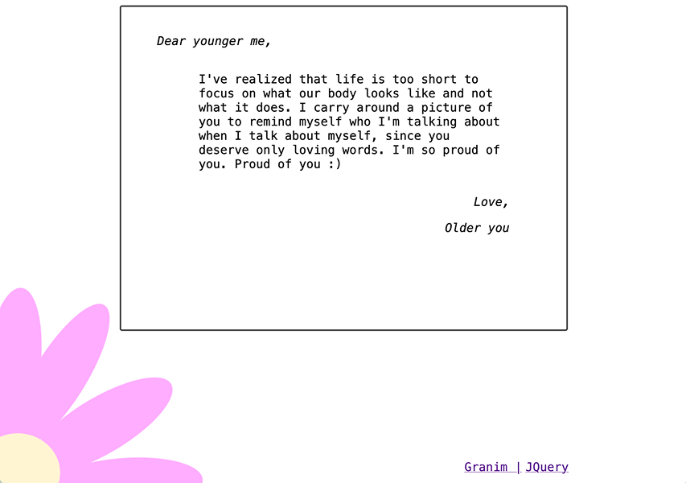
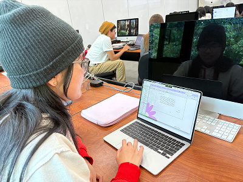
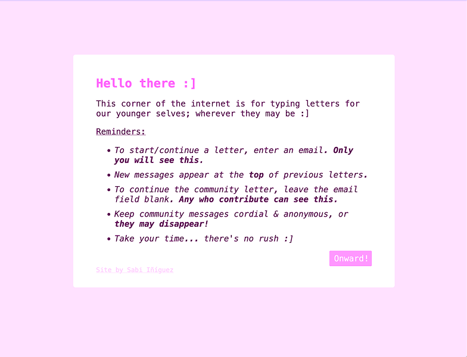
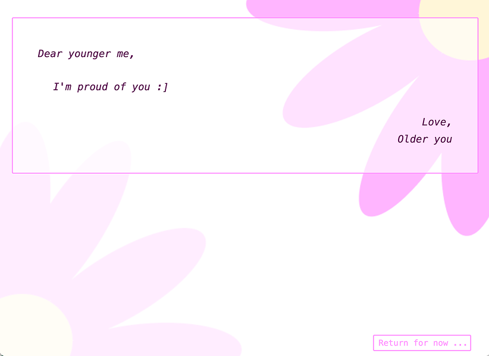
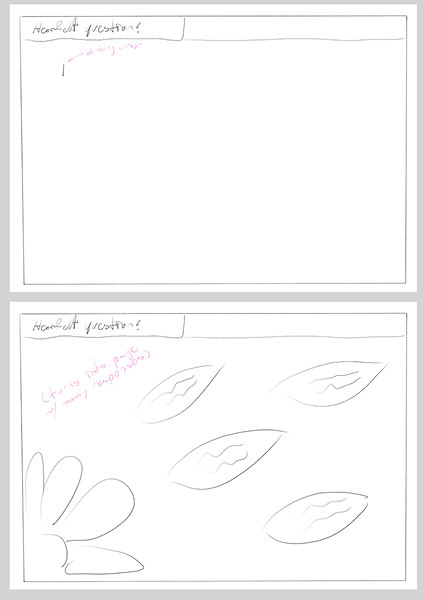
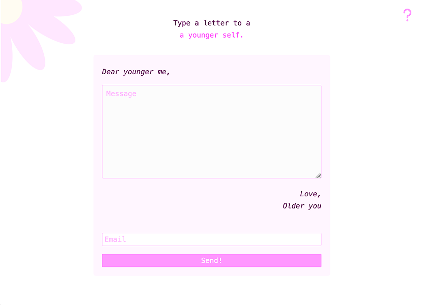

Overview
Journaling is very theraputic for me, and with graduating University around the corner, I often reflect on the ways I've changed throughout time, how I've found ways to have more love for myself, and what my younger self might want to know as she too grows.
My intended audience are women in their 20s because they are, like me, in a very transitionary time of life, and one that is very fast paced— Return; then, Onwardis a chance to slow down, still a rest stop that lasts however long the visitor needs or chooses.
UX Research
While researching existing websites with similar concepts to mine, I happened upong Pixel Thoughts, a 60-second timer that fades a visitor's stressful thought out into space in a meditative experience that places ourselves in perspective with the grandness of the world compared to the tiny happenings of our lives.

I had noted then, that this is "the kind of interaction I intend my users to have, that of opening a focused yet open-ended question that, via animation and interaction, becomes one in many responses".
And that was key to me, this wish for an experience on the internet that doesn't force the performance and publicization of self reflection, but that also isn't isolating on a soul-level.
Visual Design & Revisions

Subconsiously, in the initial stages of brainstorming, I kept doodling flowers around the ideas, mostly because it's a habit of mine anyway.

But I realized that flowers and their petals represent that important and beautiful individual growth, while eventually dispersing into pieces to join the earth, once again.

At first I went with a more literal approach, with the goal of simulating physical dispersion of petals via animations and interactability. However, it felt distracting; it was decentering the act of simple reflection.

I decided to go with one of the purest, most intimate forms of written messaging: letters. For this design, I translated the community aspect into the idea of visitors adding to one long letter, little by little, and be able to read a message that, while not entirely written by you, still has the chance of resonating with you.

There were mixed feelings about the collaborative aspect when user testing: the first participant, Kaitlyn, felt she didn't benefit from having other responses included in the letter; the second particpant, Christina, enjoyed the idea, saying it shows how human we are and how we're all connected via similar experiences and struggles; and the third participant, Lexi, was indifferent about there being other responses— saying that if they were going to be there, that there should be some clear form of separation.


So, as I'd seen both in my own conclusions when researching and from user feedback that there was a need for a balance between the individual and the community in this experience, I landed upon the design showed above, which closely resembles Version 2 of the design, however with the community letter no longer the only option for participating.
User Interface

I have a style preference that tends to shine through in my creative projects, and I'd say it airs on the side of simplicity— but not minimalism. With topics as important to me as these, I feel that modern minimalism expresses both class superiority and feigned humility. I instead like to keep my designs consice, with room for necessary whimsy and space for what truly matters.

Summary
After a few scrapped ideas and several web iterations, I arrived upon a good mix of user agency, pleasant interaction, and optional community settings in Return; then, Onward
, a site for symbolically sending letters to our younger selves, with the option of creating and incrementally addining upon your own letter, or adding messages to the community letter.